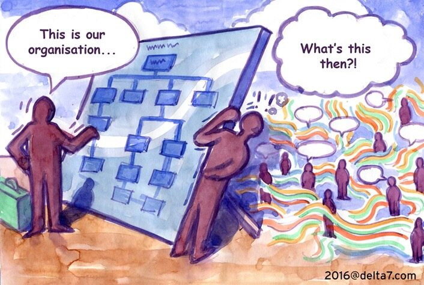
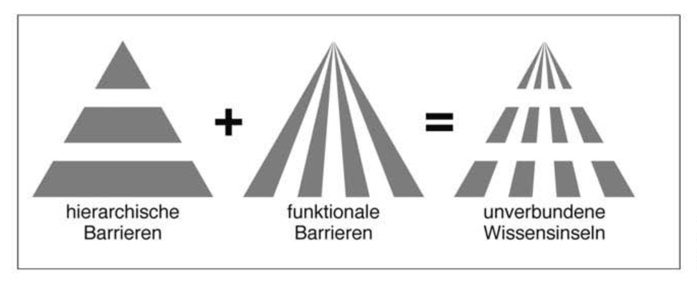
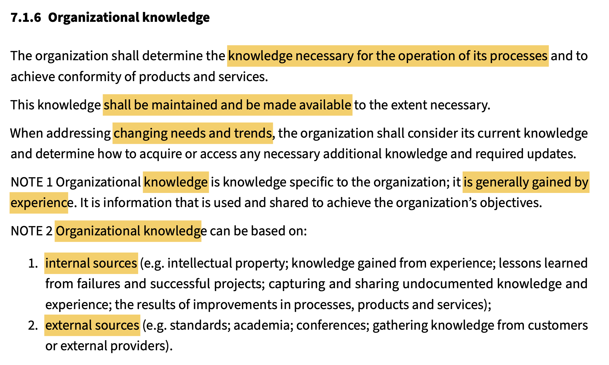
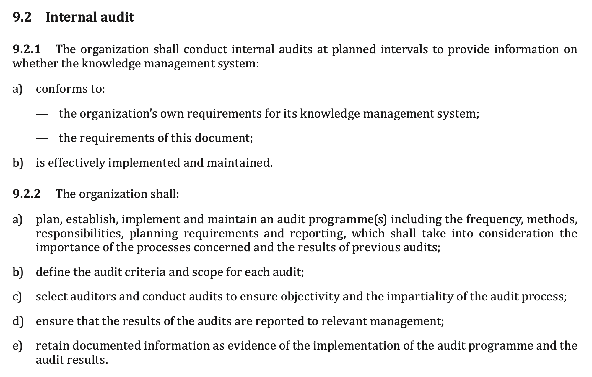

Geschichte des Wissensmanagements
> WhoAmI
- 😮 Im 50. Lehrjahr
- 🗺️ Wohne in Nürnberg
- 👪 Verheiratet, Tochter, Team Katze
- 💻 Natural Born Digital, CCC
- 🦉 Studierte: Elektrotechnik + Philosophie
- 🕸️ Wissensmanagement seit 1999
- 🎤 Podcast & Podcast-Enthusiast
- 👨💼 CEO @ Cogneon est. 2001
Organigramm (1855)

Scientific Management (1911)

Formelle und informelle Organisation

Lernen im Prozess (1959)

ISO 9001 (1987)

Lean Thinking (1988)

Problem: Wissensinseln

Hypertextorganisation (Nonaka 1995)

Bausteine des Wissensmanagements (1997)

Standard ISO 9001:2015

Standard ISO 30401:2018

Wissensmanagement Toolbox

Let's create the future of KM together!